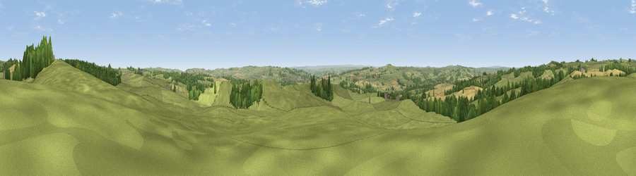

Viewpoint near Gunnerton
#17316 in England · top 39% of its area beats it · near GunnertonThe view, rendered

A 360° render of this exact spot computed from the terrain model, tree cover and land cover — summer colours, afternoon light, calibrated against photographs of famous viewpoints. Real trees, hedges and buildings will differ in detail.
The panorama
Grey silhouette: terrain skyline in each direction (720 bearings, Earth curvature and refraction included). Dashed green: skyline with trees (+15 m) and buildings (+8 m) as obstacles. Blue strip: how far the ground is visible on each bearing.
Where the view opens
Wedge length = distance to the farthest visible ground on that bearing (vegetation-aware). Rings at 10, 25 and 50 km.
What fills the view
76% grassland · 13% cropland · 11% woodland
Angular shares of the visible panorama (visual magnitude), not map area. Landscape diversity 0.32 (0–1 Shannon).
Key numbers
More beautiful places nearby
The staircase of upgrades: each row has a higher view potential than everything closer. Driving times are estimates from straight-line distance, calibrated against real road routing — check an actual route before setting out.
| Place | Direction | Drive | Score |
|---|---|---|---|
| Viewpoint near Redesmouth | NNW · 5 km | ~12 min | 64.9 |
| Viewpoint near Chollerford | SSE · 6 km | ~13 min | 65.3 |
| Viewpoint near Chollerford | SSE · 7 km | ~15 min | 67.5 |
| Viewpoint near West Woodburn | N · 8 km | ~16 min | 69.1 |
| Viewpoint near Fourstones | S · 8 km | ~16 min | 71.4 |
| Viewpoint near West Woodburn | N · 8 km | ~17 min | 73.4 |
| Darden Rigg | NNE · 22 km | ~36 min | 77.0 |
| Viewpoint near Hepple | NNE · 25 km | ~41 min | 82.4 |
55.07770, -2.13584 · source: screening · position refined by local search. Computed location — check access rights before visiting.